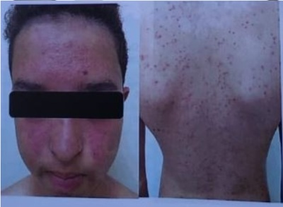
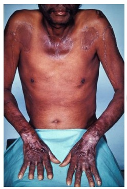
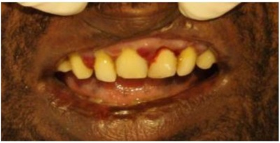
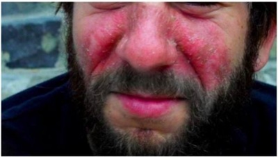
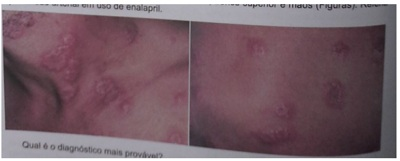
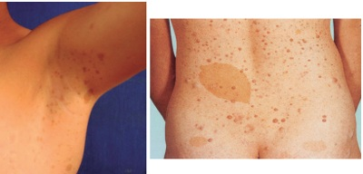

Questão 1 · Dermatologia · Eritema multif orme · Eritema multif orme · 4000169951Menino, 4 anos de idade, queixou-se de dor em braços e pernas há 3 dias. Há 1 dia, esfregava a pele sem conseguir definir se sentia prurido ou ardor. Recebeu anti-histamínico à noite e hoje acordou com máculas, pápulas e placas eritematosas com dupla borda e aspecto em tiro ao alvo, em pernas e braços. O diagnóstico provável e o agente mais associado ao quadro apresentado são:
A urticaria;
B eritema tóxico;
C eritema nodoso; tuberculose.
D eritema multiforme; herpes simples.
E escarlatina;
Questão 2 · Eritema nodoso · 4000167478Mulher de 29 anos procura atendimento no ambulatório de clínica médica devido ao surgimento de nódulos em membros inferiores há 1 mês. Relata que os nódulos surgem espontaneamente em região pré-tibial de ambas as pernas, com cerca de 1 cm de diâmetro, sendo dolorosos e não pruriginosos, com a pele sobrejacente eritematosa. Até o momento, notou 3 nódulos na perna esquerda e 2 na perna direita. Não há erosão, ulceração ou drenagem de material purulento. Nega febre, dor articular ou qualquer outra queixa. A paciente não fez uso de qualquer tratamento para o quadro atual e apenas faz uso de anticoncepcional hormonal oral (associação de etinil estradiol e drospirenona) há 2 meses. Nega comorbidades. A conduta a ser adotada deve ser
A realização de endoscopia digestiva alta.
B realização de teste de patergia.
C realização de biopsia de nervo ulnar.
D administração de prednisona 1mg/kg.
E suspensão do anticoncepcional.
Questão 3 · Eritrodermia micose f ungoide e síndrome de Sezary · 4000164848Sobre a Micose Fungoide, assinale a alternativa CORRETA.
A Pode ser causada por uma grande variedade de fungos, sendo geralmente relacionada a fungos leveduriformes.
B Suas lesões acomentem mais as áreas protegidas do sol.
C Na sua variante eritrodermica ocorre um eritema generalizado sem descamação ou prurido estando associado ao fungo
D Seu diagnóstico é confirmado pela presença de hifas na biopsia cutânea.
Questão 4 · Eritema nodoso · 4000163451Paciente de 25 anos, sexo feminino, previamente hígida, procura atendimento relatando aparecimento de lesões nodulares, eritematosas, bastante dolorosas em face anterior das pernas, há 3 dias. Refere ainda febre não aferida e prostração. A principal hipótese diagnóstica e a conduta são, respectivamente:
A infecção bacteriana de pele e partes moles – tratamento empírico com cefalexina.
B vasculite idiopática – teste terapêutico com corticoesteroides.
C calcifilaxia – investigação com paratormônio, dosagem de vitamina D e cálcio livre urinário.
D eritema nodoso – tratamento com anti-inflamatório não esteroidal e investigação de fatores desencadeantes.
E neuropatia periférica – tratamento com pregabalina.
Questão 5 · Dermatoses paraneoplásicas · 4000163442Qual das características abaixo é um achado sugestivo da síndrome de Sweet?
A Artrite de pequenas articulações.
B Linfocitose atípica.
C Início abrupto de nódulos ou placas eritematosas e dolorosas na pele.
D Consolidação alveolar pulmonar com padrão migratório.
E Telangectasias cutâneas.
Questão 6 · Dermatoses paraneoplásicas · Gastroenterologia · 4000141558Caracterizada pelo aparecimento súbito de espessamento cutâneo aveludado, hipercrômico, simétrico, extenso, exuberante, de rápida progressão, acometendo preferencialmente áreas intertriginosas, como axila, fossa cubital, região submamária, inguinal e cervical posterior. Pode estar acompanhada de acrocórdons, ceratodermia palmoplantar (paquidermatogli a adquirida) e múltiplas lesões de ceratoses seborreicas (sinal de Leser-Trélat). Afeta adultos com faixa etária de 40 anos. MADUREIRA, B., SARTI, T. D. Manifestações cutâneas das doenças sistêmicas. In: GUSSO G. (Org.); LOPES, J. M. C. (Org.); DIAS, L. C. Tratado de Medicina de Família e Comunidade: princípios, formação e prática. 2a. ed. Porto Alegre: Artmed, 2019. Essa descrição se refere à
A eritema necrolítico migratório.
B necrobiose lipoídica.
C acantose nigricante maligna.
D hipertricose lanuginosa adquirida.
E papilomatose confluente e reticulada de Gougerot-Carteaud.
Questão 7 · Acne · 4000131327Leia o caso clínico a seguir. Paciente do sexo feminino, de 18 anos, solteira, portadora de acne Grau III ou acne pápulo-pustulosa moderada, já com cicatrizes e manchas hipercrômicas residuais, procura o Serviço de Dermatologia do Hospital das Clínicas de Goiânia para tratamento. Em relação ao tratamento, sabe-se que:
A paciente já apresenta cicatrizes, portanto não precisamos mais tratar a acne, somente as manchas residuais com clareadores e fazer procedimentos cosmiátricos para as cicatrizes.
B caso seja indicado algum tratamento para acne não pode ser a isotretinoína oral, pois a paciente tem 18 anos, está em idade fértil e a medicação é teratogênica.
C o tópico com retinoides, sabonete, filtro solar é o mais indicado e iniciar tratamento para as manchas e cicatrizes concomitante com a da acne.
D por ser acne Grau III, já preconiza-se tratamento oral com antibióticos ou isotretinoína; se optar-se por este último, solicitar exames de função hepática, lipidograma e Beta HCG antes de iniciar a terapia.
Questão 8 · Acne · 4000129637No uso da isotretinoína para o tratamento de acne,
A esse medicamento é mais bem absorvido pelo trato gastrointestinal quando ingerido com refeição gordurosa, sendo seu uso proibido em menores de 16 anos pelo risco de hepatotoxicidade.
B o uso concomitante de penicilinas aumenta o risco de desenvolvimento de hipertensão intracraniana benigna, ou pseudotumor cerebral, se apresentando clinicamente com náuseas, vômitos e visão turva.
C esse fármaco tem indicação nas formas graves da doença e nas formas resistentes ou recorrentes aos tratamentos habituais ou naqueles pacientes muito afetados psicologicamente.
D em alguns pacientes pode ocorrer o agravamento (flare-up) da acne no final da terapia, sendo contraindicado o uso de corticoterapia sistêmica nesses casos.
Questão 9 · Erupção acneif orme · 4000114628Homem, 16 anos, em tratamento para pên go foliáceo há 6 meses com corticoterapia sistêmica oral e pulsoterapia com dexametasona. Há 1 mês notou lesões na face e no tronco ( guras), sem outras alterações no exame físico. Qual é o diagnóstico mais provável das lesões apresentadas?

A Sífilis secundária.
B Púrpura medicamentosa.
C Erupção acneiforme.
D Impetigo bolhoso.
Questão 10 · Hidradenite supurativa · 4000113828A hidrosadenite supurativa é um processo inflamatório crônico que afeta as glândulas apócrinas da região perianal, caracterizada por abscessos e formações sinusais. Assinale a alternativa incorreta:
A Vários fatores têm sido implicados no desenvolvimento e perpetuação da hidrosadenite, incluindo o uso de agentes depilatórios, higiene pessoal inadequada, roupas apertadas e sintéticas e antitranspirantes.
B Os organismos bacterianos mais comumente identificados incluem o Streptococucus milleri, Staphylococcus aureus, Staphylococcus epidermidis e Staphylococcus hominis.
C Os pacientes afetados, com frequência, apresentam pele seborreica, e, algumas vezes, comprometimento de outras áreas onde as glândulas sudoríparas apócrinas estão presentes, como nas axilas e nas regiões mamárias, inguinal e genital.
D As fístulas provenientes da hidrosadenite surgem acima da linha denteada na pele anal.
Questão 11 · Dermatoses paraneoplásicas · 4000107134As dermatoses neutrofílicas agudas estão associadas a que doença abaixo?
A Neoplasia hematológica.
B Tumores gastrointestinais.
C Tumores em sistema nervoso central.
D Endocardite infecciosa.
Questão 12 · Acne · 4000104726Adolescente, feminino, 16 anos, vem à consulta queixandose de “espinhas” no rosto. Relata uso pre indicado pelo farmacêutico, sem melhora. Estatura e IMC no escore Z entre 0 e +1. Genitais M5P5, menarca aos 12 anos, com regularidade menstrual. Presença de comedões, lesões cicatriciais eritematosas e predominância de pápulas eritematosas com algumas pústulas em região frontal, massaterina e mentoniana. Sem outras alterações ao exame físico. Além dos cuidados gerais com a pele, o tratamento também deve incluir:
A Tretinoína gel a 0,025% associado com antibiótico tópico como a clindamicina a 1%, uma ou duas vezes ao dia e antibiótico oral como a minociclina 100mg, uma vez ao dia.
B Adapaleno gel a 0,1%, uma vez ao dia.
C Adapaleno gel a 0,1%, uma ou duas vezes ao dia, associado a antibiótico oral como a minociclina 100mg, uma vez ao dia.
D Tretinoína gel a 0,025% associado com antibiótico tópico como a clindamicina a 1%, uma vez ao dia.
Questão 13 · Manif estações clínicas · Xantomas · Úlcera diabética · 4000082731No que se refere às manifestações cutâneas das doenças sistêmicas, assinale a alternativa considerada INCORRETA:
A A acantose nigricante em crianças está fortemente vinculada à resistência a insulina e à diabetes, e no adulto pode estar associada a adenocarcinoma gástrico;
B No paciente diabético as manifestações cutâneas são necrobiose lipoidica, dermopatia diabética, bullosis diabeticorum, granuloma anular, escleredema, dermatose perfurante adquirida, xantoma eruptivo e úlcera neuropática da perna;
C Na síndrome de Behçet o comprometimento mucoso é considerado raro, ao contrário das manifestações articulares caracterizadas pela artrite/sinovite e oculares determinadas pela presença de uveíte anterior e posterior;
D São manifestações do hipertireoidismo: mixedema, aumento das incidências de alopecia areata e vitiligo, hiperpigmentação, prurido, hiper- hidrose, onicólise, coiloniquia e mixedemapré-tibial;
E Algumas das manifestações cutâneas podem ser o reflexo de malignidades internas provocadas ação de fatores imunológicas, metabólicas ou metastáticas das células neoplásicas;
Questão 14 · Alopecias · Tinea capitis · 4000080477Criança de 7 anos comparece a consulta, acompanhado da mãe, que informa que há 02 meses a criança iniciou com alteração em couro cabeludo. Ao exame você vê: placa de alopecia em região temporal, bem delimitada, aproximadamente 4 cm de diâmetro, a descamação é moderada, cabelos curtos e facilmente destacáveis. Sua hipótese diagnóstica é:
A Alopecia areata.
B Psoríase.
C Tricotilomania.
D Tinha da cabeça.
Questão 15 · Hidradenite supurativa · 4000076802A hidradenite supurativa perianal constitui processo inflamatório crônico caracterizado pela presença de abscessos e fístulas. A etiologia desta condição está relacionada a inflamação de glândulas
A apócrinas.
B écrinas.
C da fáscia perineal.
D de Bartholin.
E pilosas.
Questão 16 · Hemangioma inf antil · 4000074315Hemangioma infantil é o tumor vascular mais comum encontrado durante a primeira infância. É uma proliferação benigna das células endoteliais. Acerca do tema, assinale a alternativa correta:
A Atualmente, os corticóides sistêmicos representam o padrão-ouro de tratamento dos hemangiomas infantis complicados.
B A maioria dos pacientes afetados possui história familiar de hemangioma.
C O curso clínico característico é marcado pela proliferação rápida e precoce,proliferação tardia mais lenta, uma fase de platô e, finalmente, involução gradual.
D Os meninos são mais acometidos que as meninas.
Questão 17 · Lesões vasculares da inf ância · 4000051056M.F.S., feminino, 4 anos. Apresenta placa eritemato-vinhosa no antebraço direito desde o nascimento, assintomática. A lesão acompanhou o crescimento da criança, mantendo a porcentagem de superfície corporal acometida. Qual é o diagnóstico mais provável e a respectiva conduta mais adequada?
A Hemangioma da infância, tratamento com propranolol.
B Malformação vascular, investigação com exame de imagem.
C Angioma em tufos, biópsia para confirmação diagnóstica.
D Nevo melanocítico, biópsia para confirmação diagnóstica.
Questão 18 · Eritema multif orme · 4000042388Sobre o eritema multiforme, marque a opção correta.
A Aproximadamente metade dos casos é precedida por uma fase prodrômica semelhante a uma infecção do trato respiratório inferior.
B Eritema fixo e urticária aguda faz parte do diagnóstico diferencial.
C A profilaxia antiviral crônica é, frequentemente, prescrita empiricamente para a forma da doença induzida pelo EBV.
D O tratamento da forma grave inclui corticosteroides sistêmicos de longo prazo e imunossupressores para doenças recorrentes, como azatioprina e micofenolato de mofetila.
Questão 19 · Acne · 4000039008Alessandra, 16 anos, estudante do segundo ano do ensino médio, vai à UBS próxima a sua casa para pedir receita de isotretinoína. Relata ter acne há dois anos e já ter utilizado sabonetes esfoliantes, sem melhora. Sua médica realiza a ectoscopia e percebe que Alessandra possui comedões, pápulas eritematosas e pústulas difusas em seu rosto. Não apresenta cistos, nódulos e cicatrizes. Dentre as alternativas a seguir, a melhor opção terapêutica para *Alessandra é
A uso de isotretinoína oral.
B peróxido de benzoíla tópico.
C retinoide tópico, como adapaleno e tretinoína.
D clindamicina tópica associado a retinoide tópico.
Questão 20 · Dermatoses específ icas da gestação · 4000037803As dermatoses relacionadas à gravidez têm potencial para relevante comprometimento da qualidade de vida das pacientes acometidas. O pen goide gestacional e a erupção polimorfa da gravidez (Pápulas Urticarianas e Placas Pruriginosas da Gravidez – PUPPG) são afecções de origem e frequência distintas, porém com parte de seus quadros clínicos sobrepostos. Assinale a alternativa que contém apenas informações corretas sobre essas patologias.
A O penfigoide gestacional é mais frequente que a erupção polimorfa da gravidez e é bastante associada à mola hidatiforme e coriocarcinoma.
B A erupção polimorfa da gravidez é afecção benigna comum no início da gestação e cursa com pápulas ou placas urticarianas eritematosas, pruriginosas, em “alvo” ou circinadas.
C As lesões das duas doenças surgem mais comumente em extremidades de membros inferiores e têm disseminação ascendente.
D O novo acometimento em gestações futuras é mais comum pelo penfigoide gestacional do que pela erupção polimorfa da gravidez.
E A erupção polimorfa da gravidez é comumente grave e seu tratamento pode incluir corticoterapia em altas doses, ciclosporina e metotrexato.
Questão 21 · Neurof ibromatose tipo I · 4000032206Sobre a neurofibromatose tipo 1, é correto afirmar que:
A os adenomas sebáceos são característicos dessa doença
B um dos pais com a doença é um dos critérios diagnósticos
C as manchas café com leite são específicas dessa doença
D um nevo vinhoso em área do trigêmeo firma o diagnóstico
Questão 22 · Manif estações e características clínicas · Acantose nigricans · 4000023778Considere uma paciente de 54 anos de idade, diabética (HbA1c = 8,2%), cardiopata isquêmica com infarto agudo do miocárdio prévio e insu ciência cardíaca com fração de ejeção reduzida. Encontra-se em tratamento para diabetes com metformina 850 mg três vezes ao dia e glibenclamida 5 mg pela manhã. No exame físico, chama a atenção a presença de manchas hiperpigmentadas/escurecidas em áreas de dobras. A respeito desse caso clínico e com base nos conhecimentos médicos correlatados, bem como nas últimas diretrizes mundiais relacionadas ao tratamento da diabetes, publicadas em 2019, julgue o item a seguir. Essa paciente tem acantose nigricans, que é comum em pacientes diabéticos e obesos. Essas lesões de pele nunca melhoram com o tratamento.
A Certo.
B Errado.
Questão 23 · Dermatoses carenciais · Def iciênciaPelagra · 4000019124Paciente, masculino, 55 anos, acompanhado pelo Consultório de Rua, procura a equipe de saúde. Veio há 02 meses para a capital em busca de melhores condições de vida, não conseguiu emprego, mora com a esposa e lhos. Refere ter parado uso abusivo de álcool há três dias para procurar emprego. No momento, apresenta queixas de tremores, náuseas sem vômitos e diarreia. Não conseguiu dormir nas últimas 24h. Ao exame, encontra-se levemente agitado, orientado no tempo e no espaço, apresenta lesões hipercrômicas, descamativas, pruriginosas e bem delimitadas em áreas de exposição solar. Nega uso de drogas e outras comorbidades. Qual o tratamento indicado para o quadro dermatológico do paciente?

A Loratadina.
B Prednisona.
C Ivermectina.
D Ácido nicotínico.
Questão 24 · Hemangioma inf antil · 4000008205Paciente de 3 meses, encaminhado ao serviço de pediatria de referência, por lesão extensa em face. A mãe refere que, no nascimento, a criança não apresentava qualquer lesão na face. Após alguns dias, surgiram manchas avermelhadas no lado esquerdo da face, que evoluíram e aumentaram de tamanho, ocupando toda a lateral do rosto, desde a fronte até o mento. A lesão apresenta relevo e algumas crostas hemáticas que a mãe refere ter sido locais que apresentaram sangramento. A criança apresenta di culdade para realizar a abertura da pálpebra à esquerda, e a lesão no nariz também faz alguma obstrução nasal. A conduta mais adequada, neste caso, é:
A O encaminhamento para um serviço de referência em dermatologia para realização de laser.
B Encaminhamento ambulatorial para avaliação com neurologista e iniciar corticoide via oral em altas doses.
C Realizar imagens do sistema nervoso central, o quanto antes e avaliação de especialista.
D Iniciar propranolol via oral e reavaliar a criança em 60 dias para acompanhar a involução.
E Encaminhar para um dermatologista para avaliação de malformação vascular, provavelmente, venosa.
Questão 25 · Hidradenite supurativa · 4000005125Sobre Hidradenite Supurativa, é correto afirmar que
A crianças são frequentemente afetadas pela doença.
B se trata de uma inflamação secundária das glândulas sebáceas.
C é também chamada de doença de Verneuil, acne inversa e pioderma fistuloso.
D na fisiopatologia, nódulos inflamados e abcessos bacterianos formam trajetos sinuosos, fistulas e cicatrizes hipertróficas.
E há oclusão das glândulas sudoríparas écrinas nas zonas intertriginosas, especialmente regiões axilares, anogenitais e região inframamária.
Questão 26 · Dermatoses paraneoplásicas · 4000005030Sobre Síndrome de Sweet, é correto afirmar que
A após a resolução das lesões, há formação de cicatriz no local.
B as citocinas, como IL-1, IL-3, IL-8 e INF-gama parecem não ter papel etiológico nesta dermatose.
C é uma dermatose neutrofílica febril, com lesões eritematosas indolores, e que tem resposta lenta à terapia com corticosteroides.
D a aparência pseudovesiculosa, secundária à edema pronunciado na derme superior, é incomum na forma associada à malignidade.
E sobre a etiologia, uma teoria sugere reação isomórfica de Koebner, outra propõe mecanismos associados a raios UVB com ativação de neutrófilos, e produção epidérmica de fator de necrose tumoral alfa e IL-8.
Questão 27 · Dermatologia · Ictiose lamelar · 4000002093Mãe de 30 anos, GI P0 A0, com pré-natal sem intercorrências, com sorologias sem alterações e ultrassonogra a morfológica normal, evolui em trabalho de parto normal e dá à luz um recém-nascido (RN) do sexo masculino, com boletim de APGAR 9 e 10; porém, o RN evolui com desconforto respiratório progressivo e, ao exame físico, além da taquipneia, observam-se pele espessa e descamativa, ectrópio, eclábio e pletora clínica. Qual é a mais provável patologia deste RN?
A Síndrome de Steven Jhonson.
B Sífilis congênita.
C Ictiose lamelar.
D Impetigo bolhoso.
Questão 28 · Hemangioma inf antil · 4000124708Sobre os hemangiomas da infância:
A Geralmente possuem uma lesão inicial já presente ao nascimento, que evolui nos primeiros meses de vida, e se mantêm estáveis a partir do segundo semestre de vida da criança.
B Os prematuros e as meninas são mais frequentemente afetados.
C A hemorragia é uma complicação mais frequente que a ulceração.
D O tratamento cirúrgico é o tratamento-padrão para os hemangiomas da infância.
Questão 29 · Alopecias · 4000120032Menino de 8 anos apresenta lesão oval, com dois centímetros de diâmetro, na região occipital direita, com perda de pelos e discreto prurido local, há dois meses. A característica que sugere o diagnóstico de alopecia areata, ao exame físico da lesão, é
A descamação no couro cabeludo e pontos purulentos.
B presença de fios tonsurados rentes ao couro cabeludo.
C fios finos esparsos e descorados.
D couro cabeludo de aspecto esclerótico.
Questão 30 · Hemangioma inf antil · 4000110621Os hemangiomas infantis (HI) são os tumores vasculares benignos mais comuns na infância. Assinale a alternativa incorreta:
A Dado seu potencial de regressão, a grande maioria dos casos de HI é conduzida de forma expectante.
B Para pacientes com HI complicados, que necessitam tratamento, a conduta medicamentosa é a escolha para a maioria dos pacientes. As principais opções terapêuticas são o propranolol, os glicocorticoides e a alfainterferona.
C O sangramento espontâneo do hemangioma, apesar de temido pelos pais, raramente ocorre.
D O HI apresenta uma fase de crescimento intraútero e a criança nasce com a tumoração.
E A ultrassonagrafia é usualmente o primeiro método de imagem a ser empregado na avaliação dos HI e, normalmente, revela uma lesão hiperecoica, homogênea e bem delimitada.
Questão 31 · Diabetes mellitus · Endrocrinologia e pele · Acantose nigricans · 4000105129A hiperpigmentação de aspecto aveludado, com espessamento das regiões exurais do pescoço, das axilas e da região inguinal, indicativo de resistência insulínica denomina-se:
A Acantose nigricans.
B Distrofia de duchenne.
C Leucodermia gutata.
D Pioderma piloso. ida oib pr ed
Questão 32 · Acne · 4000100913Quanto à Acne Vulgar, podemos afirmar que:
A O tratamento da acne inflamatória deve ser feito com retinoides orais e/ou sistêmicos.
B Piora com lítio, hidantoína, corticoides sistêmicos e tópicos, anticoncepcionais e androgênios.
C Pode ser tratada, independentemente do seu grau, com medidas dietéticas como aretirada do leite integral.
D Não tem relação com a alteração do microbioma cutâneo.
Questão 33 · Vitamina CÁcido Ascórbico · Dermatoses carenciais · Def iciênciaEscorbuto · 4000095624Um homem de 41 anos com história de uso crônico e intenso de álcool apresenta-se com queixa de dor em várias articulações, equimoses, fadiga e feridas que demoram a cicatrizar. Ao exame físico, você observa sinais de in amação e sangramento gengival. Assinale a alternativa abaixo com o diagnóstico mais provável.
A Deficiência de vitamina C.
B Deficiência de vitamina A.
C Deficiência de vitamina E.
D Deficiência de vitamina K.
E Deficiência de selênio.
Questão 34 · Dermatoses paraneoplásicas · 4000091529Homem de 58 anos, transplantado hepático há 1 ano, referindo quadro de início há 2 semanas de febre baixa diária, astenia importante, hiporexia, cefaleia holocraniana constante. Em atendimento no ambulatório, comparece com os seguintes exames laboratoriais: Hb = 10,5; Htc = 30%; leucócitos = 126.000; plaquetas = 145.000; PCR-t = 0,2. Após o diagnóstico, o paciente apresentou durante o tratamento surgimento de lesões cutâneas eritematosas papulares, in ltrativas, algumas coalescendo, dolorosas em pescoço e membro superior esquerdo. As lesões foram biopsiadas e demonstraram in ltrado neutrofílico em derme. Diante disso, assinale a principal hipótese diagnóstica:
A Síndrome de Sneddon.
B Síndrome de Stevens-Johnson.
C Síndrome de Sweet.
D Sarcoidose.
E Eritema nodoso.
Questão 35 · Prof ilaxia Vitamina A · Dermatoses carenciais · Def iciênciaEscorbuto · 4000086318Muitas vezes alterações dermatológicas observadas na criança podem ser sinais de carência nutricional. Dentre as opções a seguir, a que relaciona corretamente as alterações cutâneas com o nutriente em falta é:
A Lesões vesicobolhosas ou psoriasiformes simetricamente distribuídas, acometimento perioral - deficiência de zinco.
B Edema e eritema em áreas fotoexpostas como face, dorso das mãos e pescoço - deficiência de vitamina C.
C Ceratose folicular, enrolamento de pelos no tronco e membros - deficiência de aminoácidos essenciais e proteínas.
D Descamação castanho-avermelhada fina, difusa, com erosões e fissuras lineares - deficiência de vitamina A.
Questão 36 · Neurof ibromatose tipo I · 4000086200Menina, 10 anos, é avaliada no ambulatório de pediatria por di culdade de aprendizado. Exame físico: 13 manchas "café com leite" variadas, medindo 10 a 15 mm no seu maior diâmetro, localizadas em tronco e membros, além de máculas hipercrômicas axilares, múltiplas, com diâmetro de 2-3 mm. A mãe da paciente também apresenta múltiplas manchas com a mesma coloração em tronco e membros. Diante desse quadro, a hipótese diagnóstica mais provável é:
A Neurofibromatose tipo 1.
B Síndrome de Noonan.
C Esclerose tuberosa.
D Síndrome de Sturge-Weber.
Questão 37 · Manif estações clínicas · Diabetes mellitus · Manif estações cutâneas · 4000083814No que se refere às manifestações cutâneas das doenças sistêmicas, assinale a alternativa INCORRETA:
A A síndrome de Behçet apresenta as seguintes manifestações: ulcerações genitais em 80 a 90% dos casos e aftas orais.
B São manifestações no paciente diabético: necrobiose lipoídica, dermopatia diabética, bullosisdiabeticorum granuloma anular, escreredema, dermatose perfurante adquirida, xantoma eruptivo e úlcera neuropática da perna.
C O adenocarcinoma gástrico ou geniturinário, entre as neoplasias sistêmicas, são os únicos que não estão relacionados a nenhuma das dermatoses paraneoplásicas.
D São manifestações do hipertireoidismo: mixedema, aumento das incidências de alopecia areata e vitiligo, hiperpigmentação, prurido, hiper-hidrose, onicólise, coiloníquia e mixedema pré-tibial.
E São manifestações do lúpus eritematoso sistêmico: lesões cutâneas, alopecia, paniculites, fenômeno de Raynaud e livedo reticular.
Questão 38 · Eritema multif orme · 4000083638Qual é a causa mais comum de eritema multiforme?
A Vírus herpes simples.
B Pneumonia por Mycoplasma.
C Amoxicilina.
D Ibuprofeno.
E Citomegalovirus.
Questão 39 · Vitamina CÁcido Ascórbico · Dermatoses carenciais · Def iciênciaEscorbuto · 4000078487Homem, 51 anos, alcoólatra chega à emergência com hematêmese. Exame sico: alcoolizado, sangramento gengival significativo. Oberserva-se erupção hemorrágica em volta dos folículos pilosos, difusamente, em ambas as pernas. Endoscopia digestiva alta: sem sinais de sangramento. Exames laboratoriais: plaquetas 250.000/mm³; INR 0,9. A conduta mais adequada é administrar:
A Vitamina K.
B Vitamina C.
C Niacina.
D Folato.
Questão 40 · Eritrodermia micose f ungoide e síndrome de Sezary · 4000077906Homem, 52 anos, apresenta máculas avermelhadas e pruriginosas no tronco há mais de três anos. No último ano, as lesões coalesceram e se estenderam para os quatro membros e para a face, com formação de placas pouco elevadas eritematovioláceas, bordas definidas e serpiginosas e presença de nódulos. Nos últimos três meses, algumas lesões se tornaram ulceradas. Exame físico: pele com presença de máculas, placas e nódulos. A face tem aspecto in ltrado. Biópsia de pele: in ltrado predominantemente de linfócitos, de tamanho pequeno a médio, em meio a eosinó los e plasmócitos, presença de epidermotropismo e de microabscessos de Pautrier. A hipótese diagnóstica mais provável é:
A psoriase
B micose fungóide
C hanseníase
D mastocitose
Questão 41 · Genodermatoses · 4000065100Lactante de 2 meses e 23 dias deu entrada na emergência do hospital com quadro de lesões bolhosas dolorosas. Segundo relato da mãe, recebeu alta da maternidade com lesões em extremidade com prescrição de mupirocina por 5 dias. Apresentou leve melhora porem com aparecimento de novas bolhas, procurou unidade de emergência, tratado com benzetacil com menos de 1 mês de idade. Com 1 mês de 15 dias retornou à emergência sem melhora do sintoma, tratado com mupirocina por 5 dias. Com 2 meses e 10 dias retornou à emergência mantendo quadro, tratado com cefalexina por 10 dias com término há 1 semana. No hospital foram coletados exames admissionais. Utilizado saco coletor para urina, observou-se lesão da pela após sua retirada. Ocorreram outras lesões após retirada de acesso salinizado, sendo observada importante fragilidade na pele (bebê de algodão doce). hpp: mãe g3p3a0, lactante nascido de 38sem, parto normal, sorologias negativas, internado por 5 dias devido a icterícia, sem necessidade de fototerapia. Ao exame: lactante em bom estado geral, corado, hidratado, responsivo, sorrindo para o examinador, brincando, eupneico em ar ambiente, eucárdio. Pele e fãneros: lesões bolhosas em membros inferiores de aproximadamente 2cm de diâmetro nos quarto e quinto pododáctilos esquerdos com congruência para dorso do pé e em segundo e terceiro quirodáctilos de mão direita com 1 cm. Presença de lesões hipocrômicas em membros inferiores, tronco e membros superiores. Segundo mãe, lesões cicatriciais após ruptura de bolhas. Qual provável quadro:
A Necrólise epidérmica toxica
B Impetigo bolhoso
C Síndrome de Stevens-jhonson
D Epidermólise bolhosa
Questão 42 · Hemangioma inf antil · 4000059960Uma lactente de 3 meses apresenta uma lesão papular eritemato-vinhosa de 2 cm de diâmetro na região superior da pálpebra esquerda. Ao ser questionada, a mãe refere que ela nasceu prematura, de 32 semanas, e que a lesão não estava presente ao nascimento, mas com 15 dias de vida surgiu um ponto eritematoso que rapidamente evoluiu para a lesão atual. Há oclusão parcial da pálpebra da criança por causa da lesão. Não há história de dor, sangramento ou outra alteração. Com relação ao assunto, identifique como verdadeiras (V) ou falsas (F) as seguintes afirmativas: ( ) Trata-se de um hemangioma da infância. ( ) O tratamento de escolha é o corticoide intralesional, devido ao risco de comprometimento visual. ( ) A complicação mais frequente desse tipo de lesão é a ulceração. ( ) A oclusão da pálpebra por período prolongado pode levar à ambliopia. Assinale a alternativa que apresenta a sequência correta, de cima para baixo.
A F – V – V – F.
B V – F – V – V.
C V – V – V – V.
D F – F – F – V.
E V – V – F – F.
Questão 43 · Alopecias · 4000042680A Alopécia clinicamente pode ser definida como uma diminuição ou ausência de pêlos em áreas onde normalmente estão presentes. Nesse sentido é correto afirmar que:
A as alopécias cicatriciais tem caráter temporário.
B são consideradas como tipo de alopécia difusa cicatricial, a alopécia areata e a tricotilomania.
C a alopécia causada pela trauma do couro cabeludo devido ao motor de pequenos barcos é caracterizada como alopécia circunscrita não cicatricial.
D radiações ionizantes em doses elevadas são causa de alopécia do tipo difusa e cicatriciais pelo comprometimento dos folículos pilosos.
E alopécia androgenética somente ocorre em homens.
Questão 44 · Af tas · 4000042608Aftas são lesões ulceradas da cavidade oral, únicas ou múltiplas, em geral recorrentes. Surgem como ulcerações dolorosas e pequenas recobertas por pseudomembranas brinosas circundadas por halo eritematoso. Considerando o exposto assinale a alternativa correta.
A O diagnóstico de úlcera aftosa é feito com base em exames laboratoriais e de imagem.
B É indicado biópsia e exame histopatológico sempre que há o aparecimento de aftas.
C É encontrada em todos os grupos étnicos, sem influência de raça e mais comum em mulheres.
D As aftas têm frequência maior e são mais severas com o aumento da faixa etária.
E As aftas ou úlceras aftosas são muito raras na infância e na adolescência
Questão 45 · Esclerose tuberosa · 4000040635A Esclerose Tuberosa de Bourneville ou Doença de Pringle-Bourneville, é uma síndrome clínica complexa caracterizada por lesões múltiplas localizadas sobretudo no sistema nervoso central, coração, olhos, rim e pele. Em relação a esta doença, é correto afirmar que:
A em cerca de metade dos casos constitui-se numa síndrome autossômica dominante com penetrância de cerca de 80% e expressividade variável, com lesões que acometem sobretudo órgãos de origem embriológica ectodérmica e mesodérmica.
B na maioria dos casos o aspecto morfológico das células lesionais são embrionárias, sugerindo sua origem em células imaturas e por conseguinte gerando lesões com atipias celulares intensas.
C no cérebro desses pacientes pode haver lesões que variam de 5 mm a 3 cm de diâmetro, promovendo endurecimento das áreas atingidas e nitidamente localizadas no limite histológico da substância branca e cinzenta.
D lesões retinianas são frequentes e na sua maioria provocada por componentes fibrosos bem localizados.
E no rim a principal lesão observada são o angioma e fibroma de cápsula renal.
Questão 46 · Dermatoses carenciais · Def iciênciaPelagra · 4000028554Paciente geriátrica, cursa com exantema pigmentado em áreas de exposição solar, progredindo com episódios de diarreia, desorientação. Assinale a vitamina cuja deficiência pode estar gerando o quadro clínico referido.
A Niacina
B Vitamina B12
C Ácido Ascórbico
D Tocoferol
E Riboflavina
Questão 47 · Hemangioma inf antil · 4000021814Sobre os hemangioma da infância, é correto afirmar, exceto:
A São os tumores vasculares benignos mais comuns na faixa etária pediátrica, com maior incidência em bebês prematuros do que em recém nascidos a termo.
B Podem ser classificados como superficiais, profundos ou mistos, sendo que os hemangiomas mistos são os mais prevalentes.
C O marcador imunohistoquímico GLUT-1 diferencia hemangioma de outros tumores vasculares dos lactentes.
D Os hemangiomas em geral passam por uma fase de expansão rápida, seguida por um período estacionário e, posteriormente, por involução espontânea.
E O tratamento consiste na ressecção cirúrgica do hemangiona, e só é necessário quando ocorrem complicações, como ulceração, infecção secundária ou hemorragia.
Questão 48 · Neurof ibromatose tipo I · 4000013268Determinada paciente de 18 anos de idade, com histórico de mais de 10 manchas castanhas em tronco, pelve e membros desde a infância, efélides nas regiões axilares e inguinais e presença de vários (> 5) nódulos de Lisch em cada íris, apresenta quadro de perda de controle es ncteriano há um mês. Com base nesse caso clínico e nos conhecimentos médicos correlatos, quanto ao provável diagnóstico dessa paciente, julgue o item a seguir. Considerando-se a prevalência de depressão, ansiedade, psicose e desejo suicida, além de problemas de expressão e socialização, alguns autores recomendam a psicoterapia como parte integrante do tratamento de suporte aos pacientes com tal doença.
A Certo.
B Errado.
Questão 49 · Neurof ibromatose tipo I · 4000013262Determinada paciente de 18 anos de idade, com histórico de mais de 10 manchas castanhas em tronco, pelve e membros desde a infância, efélides nas regiões axilares e inguinais e presença de vários (> 5) nódulos de Lisch em cada íris, apresenta quadro de perda de controle esfincteriano há um mês. Com base nesse caso clínico e nos conhecimentos médicos correlatos, quanto ao provável diagnóstico dessa paciente, julgue o item a seguir. Pequena proporção dos pacientes (> 5%) apresenta dificuldade de aprendizagem.
A Certo.
B Errado.
Questão 50 · Neurof ibromatose tipo I · 4000013258Determinada paciente de 18 anos de idade, com histórico de mais de 10 manchas castanhas em tronco, pelve e membros desde a infância, efélides nas regiões axilares e inguinais e presença de vários (> 5) nódulos de Lisch em cada íris, apresenta quadro de perda de controle es ncteriano há um mês. Com base nesse caso clínico e nos conhecimentos médicos correlatos, quanto ao provável diagnóstico dessa paciente, julgue o item a seguir. O surgimento dos tumores restringe-se ao sistema nervoso periférico.
A Certo.
B Errado.
Questão 51 · Neurof ibromatose tipo I · 4000013253Determinada paciente de 18 anos de idade, com histórico de mais de 10 manchas castanhas em tronco, pelve e membros desde a infância, efélides nas regiões axilares e inguinais e presença de vários (> 5) nódulos de Lisch em cada íris, apresenta quadro de perda de controle esfincteriano há um mês. Com base nesse caso clínico e nos conhecimentos médicos correlatos, quanto ao provável diagnóstico dessa paciente, julgue o item a seguir. Trata-se de uma doença hereditária, congênita, autossômica dominante, mas com grande proporção de mutações esporádicas.
A Certo.
B Errado.
Questão 52 · Neurof ibromatose tipo I · 4000013249Determinada paciente de 18 anos de idade, com histórico de mais de 10 manchas castanhas em tronco, pelve e membros desde a infância, efélides nas regiões axilares e inguinais e presença de vários (> 5) nódulos de Lisch em cada íris, apresenta quadro de perda de controle esfincteriano há um mês. Com base nesse caso clínico e nos conhecimentos médicos correlatos, quanto ao provável diagnóstico dessa paciente, julgue o item a seguir. Há elementos suficientes para aventar o diagnóstico de neurofibromatose tipo II.
A Certo.
B Errado.
Questão 54 · Hidradenite supurativa · 4000126059A hidrosadenite é uma doença inflamatória da pele e tecido subcutâneo causada pela obstrução dos ductos de drenagem das glândulas apócrinas. Ocorre após a puberdade e quando acomete as regiões perianal glútea e inguinal de forma extensa, constitui-se em um problema médico de difícil solução técnica. No tratamento da hidrosadenite supurativa extensa das regiões perianal e glútea:
A Os melhores resultados são obtidos com tratamento clínico com antibióticos.
B Os melhores resultados são obtidos com fistulotomia e curetagem de cada trajeto.
C É obrigatória a realização de colostomia derivativa como complementação da cirurgia.
D O padrão ouro permanece a ampla excisão da pele envolvida.
E A radioterapia esta indicada devido ao alto índice de neoplasias associadas.
Questão 55 · Diabetes mellitus · Acantose nigricans · 4000122128Adolescente masculino, 13 anos, passou em consulta no posto de saúde com queixa de aparecimento de manchas escuras e ásperas em região cervical, axilar e periumbilical, sem prurido ou dor, mas que parecem estar aumentando. Ao exame físico, observa-se peso de 78 kg e estatura de 146 cm, índice de massa corpórea de 36,6 kg/m² e pressão arterial de 130 x 84 mmHg. Lesões com hiperqueratinas e hiperpigmentadas (cor marrom-escura). Assinale a alternativa que apresenta a hipótese mais provável para essas lesões de pele.
A Tinea corporis.
B Eritema marginatum.
C Dermatite de contato.
D Acantose nigricans.
E Dermatose.
Questão 56 · Acne · 4000118061A isotretinoína e uma droga utilizada para o tratamento de acne, entretanto ela tem algumas contra indicações, qual das opções abaixo não é considerada contra indicação?
A Gestação
B Dislipidemia
C Diabetes mellitus
D Hepatopatia
Questão 57 · Eritema multif orme · 4000112150As lesões clínicas bucais mais frequentes do eritema multiforme são:
A Pápulas dolorosas da bochecha.
B Úlceras sangrantes dos lábios.
C Aftas ínguas.
D Todas as alternativas anteriores.
Questão 58 · Neurof ibromatose tipo I · 4000077661Sobre a Neurofibromatose tipo I, é CORRETO afirmar que:
A Os adenomas sebáceos são característicos desta doença.
B Um dos pais com a doença é um dos critérios diagnósticos.
C As manchas café com leite são específicas desta doença.
D Um nevo vinhoso em área do trigêmeo firma o diagnóstico.
E As complicações neurológicas raramente são encontradas.
Questão 59 · Dermatoses carenciais · Def iciênciaPelagra · 4000061978A pelagra é uma doença carencial causada pela deficiência da
A vitamina B2.
B vitamina B1.
C vitamina B12.
D biotina.
E niacina.
Questão 60 · Hipertiroidismo · Endrocrinologia e pele · 4000056784Sabendo que as doenças da tireoide, em particular o hipertireoidismo, podem comprometer a pele e seus anexos, marque o item descrito abaixo, no qual as alterações descritas representam essa associação.
A Alopécias, não-cicatriciais, eritema palmar, onicólise, pele quente e úmida, prurido e urticária;
B Alopécias cicatriciais, eritema palmar, onicólise, pele quente úmida, prurido e urticária;
C Alopécias cicatriciais, eritema palmar, onicólise, pele quente e úmida, hiperpigmentação difusa;
D Alopécias não-cicatriciais, eritema palmar, onicólise, pele seca, sudorese diminuída, prurido e urticária;
E Alopécias não-cicatriciais, eritema palmar, onicólise, pele seca, sudorese diminuíida, hiperpigmentação difusa;
Questão 61 · Alopecias · 4000056776Considerando que as alopecias não-cicatriciais podem estar relacionadas à doenças sistêmicas, marque o item, no qual todas as doenças citadas têm esta correlação.
A Deficiência de ferro, Dermatomiosite, Lupus eritematoso, Siflis secundária, Sarcoidose;
B Deficiência de zinco, Esclerodermia, Hipertireoidismo, Hipotiroidismo, Sarcoidose;
C Deficiência de ferro e de zinco, Hipertireoidismo, Hipotireoidismo, Siflis secundária;
D Deficiência de ferro, Esclerodermia, Hipertireoidismo,Hipotireoidismo, Lupus eritematoso;
E Deficiência de ferro e de zinco, Dermatomiosite, Hiperireoidismo, Hipotireoidismo, Sarcoidose;
Questão 62 · Dermatoses carenciais · Def iciênciaPelagra · 4000049900Paciente de 52 anos, etilista, procurou atenção básica em com queixa de dermatite com lesões hipercrômicas, descamativas e pruriginosas em área de exposição solar, há cerca de 2 meses, associado a diarréia recorrente e alterações de comportamento com períodos de depressão e insônia. O quadro clínico é sugestivo de:
A Deficiência de Tiamina (vitamina B1) Beriberi.
B Deficiência de Niacina (vitamina B3) Pelagra.
C Deficiência de Cianocobalamina (vitamina B12).
D Deficiência de Ácido Fólico (vitamina B9).
Questão 63 · Esclerose tuberosa · 4000041223Manchas ou máculas são alterações de cor na pele, de qualquer forma ou tamanho. A doença autossômica dominante que apresenta manchas hipocrômicas, adenomas sebáceos, epilepsia e retardo mental é denominada:
A síndrome de Peutz-Jeghers
B dermatite ocre
C Esclerose tuberosa
D carotenodermia
E vitiligo
Questão 64 · Dermatoses carenciais · Def iciênciaEscorbuto · 4000036095Paciente masculino, morador de rua, procura atendimento em unidade de saúde por astenia, mialgia generalizada e dores ósseas intensas. Alimentação precária, com restos de alimentos encontrados. Etilista diário de grandes volumes. Ao exame físico, apresenta cabelos e dentes quebradiços assim como púrpuras foliculares palpáveis. Em oroscopia, observam-se as alterações abaixo: Qual a hipótese diagnóstica MAIS PROVÁVEL?

A Pelagra.
B Leucemia mieloide aguda.
C Hepatopatia alcoólica.
D Escorbuto.
Questão 65 · Dermatologia · 4000024176A dermatologia estuda não só a pele como a unha e os cabelos. Existem várias doenças que podem acometer essas estruturas. Entre essas doenças,
A o vitiligo é uma leucodemia caracterizada pelo aparecimento de lesões acrômicas na pele. O exame na luz de Wood torna as lesões mais evidentes. No vitiligo, o sinal de Zileri é positivo.
B a psoríase é uma dermatose crônica caracterizada por lesões eritemato-escamosas. A curetagem metódica de Brocq fornece dois sinais clínicos: o sinal de vela e o sinal de Nikolsky.
C a alopecia areata é caracterizada pela perda de pelos localizada ou generalizada. Pode apresentar alterações ungueais associadas ao quadro capilar. Apresenta, na biópsia, infiltrado inflamatório peribulbar.
D o pênfigo foliáceo é a forma caracterizada por lesões exulceradas na mucosa oral e na pele. Existe um subtipo de pênfigo foliáceo com acometimento apenas mucoso com autoanticorpos contra a desmogleína 3.
Questão 66 · Xantomas · Manif estações e características clínicas · Diabetes Mellitus tipo 2 DM 2 · 4000017534R.L.P. é um senhor de 65 anos de idade, com diabetes mellitus (DM) há mais de 20 anos, controlada parcialmente com o uso de medicações orais. Houve indicação de início de insulinoterapia há cerca de 3 anos, mas o paciente tem di culdade de aderir a essa medida em razão de sua baixa acuidade visual, que lhe impede de marcar corretamente a quantidade de unidades prescrita na seringa. Acerca do caso clínico apresentado e considerando o diabete mellitus e suas complicações, julgue o item a seguir. A forma eruptiva dos xantomas usualmente ocorre em pacientes com DM descompensado, mas a patogênese primária relaciona-se com a hiperlipidemia.
A Certo.
B Errado.
Questão 67 · Dermatologia · 4000000272Assinale a alternativa incorreta:
A O mixedema pré-tibial caracteriza-se por placas firmes, coloração amarelada, preferencialmente na face anterior das pernas, podendo estar associado à Doença de Graves.
B Na acrodermatite enteropática ocorre dermatite de localização acral, alopecia e diarreia, provocada por deficiência de cobre.
C Xantomas são lesões cutâneas deocrrentes do depósito de lípidios na pele, mesmo que os niveis sanguineos estejam normais.
D A principal manifestação cutânea das porfirias é a fotossensibilidade.
E Na amiloidose cutânea primária macular, ocorre predileção das lesões pela região interescapular.
Questão 68 · Manif estação dermatológica em pacientes com doenças sistêmicas · 4000000252É correto afirmar sobre as manifestações cutâneas observadas no Diabetes Mellitus.
A A necrobiose lipoídica que acomete pacientes diabéticos ocorre mais freqüentemente naqueles que são insulino- dependentes.
B A úlcera crônica do pé diabético está relacionada, na maioria dos casos, à isquemia vascular periférica.
C A Doença Bolhosa (bullosis diabeticorum) é a dermatose mais comum em pacientes com diabetes.
D A dermopatia diabética manifesta-se por lesões acastanhadas nos membros inferiores, mais comum nas mulheres.
E A infecção fúngica mais comum no diabetes é a pitiríase vesicolor.
Questão 69 · Rosácea · 4000109448Com relação a imagem abaixo (Conforme imagem do Caderno de Questões), a lesão dermatológica abaixo é:

A Hanseníase
B Psoríase
C Penfigo vulgar
D Ptiríase versicolor
E Rosácea
Questão 70 · Acne · 4000101341A acne vulgar é uma afecção inflamatória crônica da unidade pilossebácea, constituída por quadro polimorfo de lesões cutâneas. A classificação mais utilizada considera o tipo de lesão predominante, permitindo a escolha terapêutica mais adequada. Assim, a isotretinoína oral sistêmica está reservada como primeira opção de escolha na acne:
A comedoniana
B conglobata
C papulopustulosa
D escoriada
Questão 71 · Prurigo estróf ulo · 4000086935Em relação ao tratamento do prurigo estrófulo (urticária papular):
A Anti- histamínicos orais têm utilidade quando o prurido é bastante intenso.
B Corticoides orais iniciados precocemente inibem o progresso da doença.
C Corticoides tópicos potentes estão indicados para melhorar os sintomas.
D Anti-histamínicos tópicos são muito úteis para o alívio do prurido e da dor.
Questão 72 · Eritrodermia micose f ungoide e síndrome de Sezary · 4000072912Após anos da existência de dermatose caracterizada por máculas com aspecto enrugado, tipo "papel de cigarro", seguidas pelo aparecimento de placas hipercrômicas no dorso, um indivíduo de 58 anos desenvolve eritrodermia esfoliativa difusa. A biópsia de pele revela aglomerados de linfócitos T CD4+ atípicos na derme e epiderme, sendo estabelecido o diagnóstico de:
A Histiocitose X.
B Micose fungoide.
C Síndrome de Sweet.
D Imunodeficiência comum variável.
Questão 73 · Acne · 4000062390Uma adolescente de 12 anos apresenta há um ano comedos e pápulas eritematosas na região frontal, paranasal e mentoniana, além de cabelos mais oleosos e odor mais intenso do suor. A menarca ocorreu há 6 meses e os ciclos são irregulares, sem dismenorreia, mas houve piora das lesões, com aparecimento de pústulas. Não há outros sinais de hiperandrogenismo. Nunca fez tratamento específico, apenas sabonetes comprados por conta própria. Com base na história, assinale a alternativa CORRETA.
A A fisiopatologia da acne envolve hiperplasia da camada córnea e proliferação bacteriana, e no caso descrito deve ser investigada síndrome do ovário policístico.
B A acne é uma dermatose comum e deve ser encaminhada ao especialista, pois seu tratamento é complexo e envolve medicamentos pouco conhecidos pelo médico generalista.
C Na patogênese da acne está envolvida a proliferação de Staphylococcus aureus como principal patógeno associado à piora da inflamação.
D Fatores desencadeantes, como estresse, produtos cosméticos, medicamentos e hiperinsulinismo, podem piorar um quadro de acne.
E A alimentação é importante na fisiopatologia da acne, sendo recomendadas dietas de exclusão de alimentos gordurosos e hipercalóricos.
Questão 74 · Dermatoses carenciais · Def iciênciaPelagra · 4000059849Paciente masculino, de 56 anos de idade, alcoólatra, é internado com quadro clínico de diarreia pastosa, sem elementos inflamatórios, e perda ponderal. Ao exame físico, encontra-se desorientado, sem apping ou sinais neurológicos focais, e apresenta rush cutâneo eritematoso descamativo, simétrico, em áreas fotoexpostas. No tratamento dessa doença, é indicada a reposição de:
A ácido fólico
B piridoxina
C tiamina
D niacina
Questão 75 · Af tas · 4000058475Qual é a doença da mucosa oral mais comum?
A Pênfigo vulgar
B Estomatite vésico-bolhosa por Herpes Simples
C Leucoplasia por hiperqueratose
D Estomatite aftóide recorrente
E Líquen plano
Questão 76 · Hemangioma inf antil · 4000058277As lesões vasculares são relativamente comuns na criança. Entretando a diferenciação entre hemangiomas e outras alterações vasculares nem sempre é fácil, propiciando denominações incorretas e orientações equivocadas. São características de hemangiomas. EXCETO:
A É uma lesão vascular benigna com um padrão de evolução típico. Podem ou não estar presente ao nascimento, apresenta uma fase de crescimento rápido e uma involução lenta
B Podem ser classificados em superficial, profundo e misto (ou combinado)
C A ulceração é a complicação mais frequente.
D Pode fazer parte de Síndromes como a de Sturge Weber.
E Quando localizados em linha média, podem estar associados com outras mal formações e portanto devem ser investigados.
Questão 77 · Prurigo estróf ulo · 4000051196O prurido estrófulo é uma doença que acomente crianças a partir dos 6 meses de idade, pois necessita de sensibilização, sendo necessária a ocorrência de várias picadas antes que apareçam os sintomas. Evitar as picadas de insetos é o tratamento mais e caz. Com relação a orientações quanto ao uso de repelentes tópicos em crianças, qual das alternativas abaixo NÃO deve ser recomendada?
A Usar o repelente nas áreas expostas em caso de passeios em fazendas.
B Não aplicar nas mãos das crianças
C Evitar uso próximo de mucosas
D Usar durante o sono em locais com muitos mosquitos.
Questão 78 · Eritrodermia micose f ungoide e síndrome de Sezary · 4000037930Mulher, 78 anos, hipertensa e diabética, chega ao pronto atendimento apresentando quadro de eritrodermia há 40 dias. Refere quadro semelhante há 6 meses, que se resolveu com tratamento clínico. É possibilidade diagnóstica:
A Diabetes descompensado.
B Sídrome nefrítica.
C Farmacodermia.
D Lupus.
Questão 79 · Esclerose tuberosa · 4000033316Lactente de nove meses apresenta crises epilépticas desde o segundo mês, é internado com sinais e sintomas de insu ciência cardíaca. Exame físico: manchas hipocrômicas em forma de folha distribuídas no tronco e partes proximais dos membros. Ecocardiograma: presença de um nódulo intracavitário conectado à parede anterior do átrio esquerdo. O diagnóstico mais provável é:
A Neurofibromatose.
B Esclerose tuberosa.
C Síndrome oculocerebrocardíaca.
D Síndrome velocardiofacial.
E Fibroelastose endocárdica.
Questão 80 · Alopecias · 4000033239Escolar de sete anos do sexo feminino apresenta perda localizada de cabelos há três meses. Ao exame, notam-se duas áreas circulares de perda quase completa de pelos, nas regiões frontal e parietal. A pele no centro das placas é normal, com pelos facilmente destacáveis na periferia. Algumas unhas apresentam depressões rasas. A hipótese diagnóstica é:
A Tricotilomania.
B Alopécia areata.
C Tinha do couro cabeludo.
D Alopécia de tração.
E Eflúvio telógeno.
Questão 81 · Hemangioma inf antil · 4000033167Lactente de 3 meses de idade apresenta lesão angiomatosa que acomete toda a extensão da pálpebra superior direita. A lesão que era plana quando surgiu no primeiro mês de vida, mostra-se atualmente elevada e volumosa, interferindo no movimento de abrir e fechar dos olhos. O diagnóstico clínico rmado é de hemangioma. A conduta mais adequada para este caso é:
A Expectante.
B Exérese cirúrgica.
C Corticoterapia oral.
D Embolização.
E Radioterapia superficial.
Questão 82 · Eritema nodoso · 4000032019Mulher de 28 anos em uso de anticoncepcional oral comparece ao Centro de Saúde com história recente de amigdalite aguda tratada com amoxicilina e relata presença de lesões eritematosas nodulares e dolorosas acompanhadas de edema em região pré-tibial. Em relação ao quadro dermatológico, assinale a alternativa ERRADA:
A Braço, face e tronco são outros sítios de acometimento
B Involui em semanas e não recorre
C Paniculite lúpica é diagnóstico diferencial
D Pode associar-se também à doença de Behçet e sarcoidose
Questão 83 · Alopecias · 4000028446Escolar de oito anos, do sexo masculino, apresenta perda localizada de cabelos há dois meses. Ao exame notam-se duas áreas circulares de perda quase completa de pêlos, uma na região frontal e outra na região ociptal. A pele no centro das placas é normal, com pêlos facilmente destacáveis na periferia. Algumas unhas apresentam depressões rasas. A hipótese diagnóstica é:
A Tricotilomania.
B Eflúvio telógeno.
C Alopecia areata.
D Alopecia de tração.
E Tinha do couro cabeludo.
Questão 84 · Hemangioma inf antil · 4000028335Lactente de três meses de idade apresenta lesão angiomatosa que acomete toda a extensão da pálpebra superior direita. A lesão que era plana quando surgiu no primeiro mês de vida, mostra-se atualmente elevada e volumosa, interferindo nos movimentos de abrir e fechar os olhos. O diagnóstico clínico rmado é de hemangioma. A conduta mais adequada para este caso é:
A Expectante.
B Corticoterapia oral.
C Embolização.
D Exérese cirúrgica.
E Radioterapia superficial.
Questão 85 · Genodermatoses · 4000022921Criança de 10 anos de idade chega pela primeira vez ao consultório de um pediatra com placas esbranquiçadas orais e bolhas cutâneas, e diz que ambas são recorrentes. A paciente estava bem até os dois anos de idade, quando iniciaram as lesões na boca. Em seguida notou vesículas e bolhas em dorso de mãos e planta dos pés, além de joelhos. As lesões esbranquiçadas de mucosa se tornaram ulceradas e dolorosas. As lesões duram de uma a duas semanas e cicatrizam com atrofia local e reabsorção óssea distal. Com base nesses dados iniciais da história, qual o diagnóstico mais provável?
A Epidermólise bolhosa.
B Pênfigo paraneoplásico.
C Eritema multiforme.
D Doença mão-pé-boca.
E Dermatite de contato ao látex.
Questão 86 · Dermatologia · 4000019803Assinale a alternativa correta:
A Os abscessos cutâneos são causados frequentemente por bactérias.
B A acne vulgar é um distúrbio crônico das glândulas sudoríparas.
C O pênfigo foliáceo é transmitido pela picada do mosquito.
D O vitiligo é caracterizado por manchas hipercrômicas.
Questão 87 · Genodermatoses · 4000018656O próximo item apresenta uma situação hipotética seguida de uma assertiva a ser julgada a respeito da violência contra crianças e adolescentes. Um lactente de oito meses de idade, que apresenta bolhas de graus e formas variadas e erosões em áreas de atrito, foi levado ao médico pela mãe. Essas lesões começaram a ocorrer aos dois meses de idade e coincidiram com a chegada de uma cuidadora para criança, razão pela qual a mãe descon a de que a criança esteja sendo maltratada com queimaduras intencionais por cigarro. Nesse caso, as lesões, provavelmente, foram causadas por uma doença congênita de pele, e não por queimaduras intencionais.
A Certo.
B Errado.
Questão 88 · Dermatologia · 4000003483Laura, sete meses de vida, foi levada à consulta com pediatra, por apresentar lesões papulares, em grupos de três, com disposição linear no tronco, próxima ao elástico da roupa. Qual o diagnóstico mais provável e a melhor conduta?
A Trata-se de prurigo estrófulo, devido a agente voador, como mosquitos ou pernilongos. Evitar a picada é o tratamento mais eficaz. Pode ser usado repelente cujo princípio ativo é a icaridina, bem como corticoide tópico, além de anti-histamínicos e loções com cânfora ou calamina.
B Trata-se de prurigo estrófulo, devido a agente andador, como pulga ou percevejo. Evitar a picada é o tratamento mais eficaz. Pode ser usado repelente cujo princípio ativo é a icaridina, bem como corticoide tópico, além de anti-histamínicos e loções com cânfora ou calamina.
C Trata-se de urticária papular, devido a agente voador, como mosquitos ou pernilongos. Evitar a picada é o tratamento mais eficaz. Pode ser usado repelente cujo princípio ativo é a icaridina, bem como corticoide tópico, além de anti-histamínicos e loções com cânfora ou calamina.
D Trata-se de picada de inseto, devido a agente andador, como pulga ou percevejo. Evitar a picada é o tratamento mais eficaz. Pode ser usado repelente cujo princípio ativo é o DEET(N,N- dimetil-met-toluamida), bem como corticoide tópico, além de anti- histamínicos e loções com cânfora ou calamina.
E Trata-se de urticária papular devido a agente andador, como pulga ou percevejo. Evitar a picada é o tratamento mais eficaz. Pode ser usado repelente cujo princípio ativo é a permetrina a 0,5%, diretamente sobre a pele, bem como corticoide tópico, além de anti- histamínicos e loções com cânfora ou calamina.
Questão 89 · Prurigo estróf ulo · 4000002196O prurido estrófulo é uma doença que acomente crianças a partir dos 6 meses de idade, pois necessita de sensibilização, sendo necessária a ocorrência de várias picadas antes que apareçam os sintomas. Evitar as picadas de insetos é o tratamento mais e caz. Com relação as orientações quanto ao uso de repelentes tópicos em crianças, qual das alternativa abaixo NÃO deve ser recomendada?
A Usar o repelente nas áreas expostas em caso de passeios em fazendas.
B Não aplicar nas mãos das crianças.
C Evitar uso próximo de mucosas.
D Usar durante o sono em locais com muitos mosquitos.
Questão 90 · Esclerose tuberosa · 4000115487Sobre a Esclerose Tuberosa, assinale a alternativa CORRETA:
A É uma desordem genética e, portanto, uma doença não contagiosa, causada por anomalias nos genes TSC1 ou TSC2, dos cromossomos 9 e 16, respectivamente.
B Um tipo de tumor de células germinais derivado de células pluripotentes e constituído de elementos de diferentes tipos de tecido de uma ou mais das três camadas de células germinais.
C Tumor benigno do tecido conjuntivo fibroso. Pode ser considerado uma hiperplasia reacional do tecido conjuntivo em resposta a traumas e irritação.
D Uma lesão benigna rara, muitas vezes diagnosticado quando atinge grandes proporções devido ao seu crescimento insidioso. Nesses casos, pode causar dor, mobilidade e deslocamentos dentais.
Questão 91 · Eritema nodoso · 4000109886Mulher de 23 anos procura o clínico com queixa de há 6 meses apresentar diarreias frequentes com muco, pus e sangue, já tendo realizado exames parasitológico de fezes, todos negativos. Vem emagrecendo e há duas semanas apresentou dores articulares e manchas dolorosas, elevadas e arroxeadas em membros inferiores. Essas lesões dermatológicas podem corresponder a:
A Eritrasma.
B Ectima ou impetigo.
C Eritema nodoso.
D Púrpura reacional.
E Eritema multiforme.
Questão 92 · Dermatoses carenciais · Def iciência · 4000109469Assinale a alternativa que apresenta as alterações causadas pela deficiência de zinco:
A Coiloníquia, dermatite em áreas fotossensíveis, diarreia.
B Alopecia, dermatite periorificial, dermatite em áreas fotossensíveis.
C Alopecia, traquioníquia, demência.
D Demência, diarreia, coiloníquia.
E Traquioníquia, diarreia, queilite
Questão 93 · Acne · 4000109153Uma jovem de 17 anos, estudante, branca, procura o médico de uma unidade de saúde da familia (USF) com quadro de acne pápulo-pustular leve a moderada, mais intensa na face, mas com lesões também no dorso e colo. A jovem sente-se envergonhada e diminuída frente às colegas na escola. Sua menarca ocorreu aos 12 anos e tem menstruações regulares. A conduta mais adequada é:
A Explicar que isso é comum na sua idade e encaminhá-la ao dermatologista para tratamento.
B Prescrever sabonete antisséptico e encaminhá-la ao dermatologista.
C Prescrever cefalexina 500 mg 6/6 horas por 7 dias e acompanhar mensalmente a evolução.
D Prescrever gel com peróxido de benzoila 5% + clindamicina 1% (uso tópico) e acompanhar mensalmente a evolução.
Questão 94 · Eritema multif orme · 4000107851Mulher, 45 anos, procura atendimento com surgimento de lesões persistentes em tegumento há 10 dias, distribuídas no segmento cefálico, tronco superior e mãos. Referia hipertensão arterial em uso de enalapril. Qual é o diagnóstico mais provável?

A Hanseníase tuberculoide.
B Eritema polimorfo.
C Urticária.
D Dermatofitose.
Questão 95 · Neurof ibromatose tipo I · 4000085816Paciente de 17 anos apresentou diagnóstico de hipertensão arterial sistêmica (HAS). O exame físico revelou os achados reproduzidos abaixo. A paciente informou que o pai tinha lesões de pele semelhantes. Que causa endócrina de HAS secundária, dentre as abaixo, se associa mais provavelmente com a síndrome apresentada pela paciente?

A Acromegalia
B Feocromocitoma
C Hiperaldosteronismo primário
D Síndrome de Cushing
E Hipertireoidismo
Questão 96 · Prurido · Síf ilis · 4000079905Todas as condições clinicas abaixo são causas de prurido generalizado sem evidência de lesão cutânea , exceto:
A Sífilis.
B Doença biliar obstutriva.
C Doença de Hodgkin .
D Uremia.
E Nenhuma das alternativas .
Questão 97 · Eritema multif orme · 4000078140Menina, 11 anos, apresenta exantema papular, inicialmente macular e depois em forma de alvo com bordas eritematosas, halo interno pálido e centro purpúreo, mais presentes em superfícies extensoras superiores. Há dez dias surgiram pequenas lesões vesiculares agrupadas nos lábios, na área de transição com a pele, que evoluíam para crostas e que já ocorreram em outras oportunidades. Em relação às lesões desta doença, que:
A Duram em torno de quatro semanas.
B Caracteristicamente são migratórias.
C Podem dar a sensação de queimação.
D Têm distribuição assimétrica no corpo.
Questão 98 · Hemangioma inf antil · 4000073335Em relação aos Hemangiomas podemos afirmar que:
A Os hemangiomas passam por uma fase de expansão rápida seguida por involução espontânea.
B A principal complicação é a hemorragia.
C Hemangiomas numa distribuição em face podem associar-se a envolvimento das vias aéreas superiores.
D A terapia com interferon é a mais indicada quando torna-se necessário a intervenção terapêutica.
E Hemagiomas não envolvem a face.
Questão 99 · Dermatoses carenciais · Def iciênciaPelagra · 4000059042A tríade clássica "dermatite, diarreia e demência", define uma doença carencial decorrente da deficiência de: Respostas: 1 12 23 34 45 56 67 78 89
A Tiamina
B Piridoxina
C Cobalamina
D Niacina
E Biotina